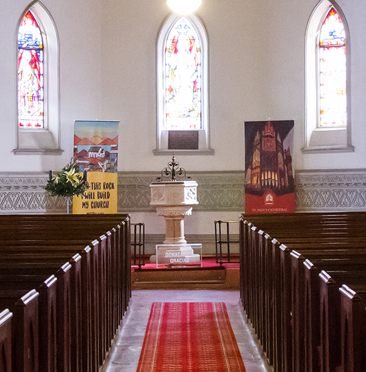
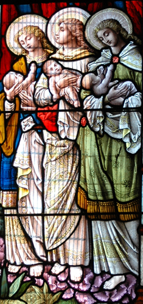

The history of St Paul’s Cathedral
Valparaiso was the most important port of call
on the west coast of South America. Until the opening of the Panama
Canal in 1914 all ships arrived via Cape Horn, taking at least two
months from Liverpool, and sometimes up to six months with waiting for
safe passage.

Many new arrivals in Valparaiso in the nineteenth century were of British and German origin, and the Anglicans and Lutherans and other Protestant Christians had no place in which to worship. St Paul’s was built in 1858. Note that the church has no spire, bell tower, external cross or main door because he government allowed the community to build St Paul’s on the condition that it kept a “low profile”. The church was built to be a “beacon on a hill” before there was religious freedom in Chile. It was named a national monument in 1979 and a cathedral in 2016, serving the Anglican community throughout Chile.

There are photographs inside which show what Valparaiso looked like at
the time, with few other buildings and bare cliffs down to the sea.

The metal scrapers at the entrance to the cathedral were to remove mud
from the shoes of people who arrived on foot, horseback or by carriage.
As you enter the cathedral you will find the baptistry at the back,
holding the limestone font.

Traditionally the font is at the entrance
to a church building, to symbolise the fact that as Christians we enter
the “church” when we are baptized. Above the font are stained glass
windows in memory of the six children of Thomas Woodsend, who all died in infancy.

To the left of the baptistry there are two brass plaques on the wall, with the names of the men from the community who gave their lives in the First and Second World Wars.

Above your heads the wooden curved beams are made of laminated Oregon
pine, using a cutting edge technique, which was also used in the
Crystal Palace and Charing Cross underground station, both of which
have long since disappeared.


The ceiling has slanted
boards, like the keel of a ship, which were used for added strength,
and the whole construction was the work of the engineer William Lloyd,
who came to Chile to work on railway bridges.

The nave holds numbered pews, seating approximately 400 people.

There have been many illustrious visitors over the years, including President Federico Errazuriz, the Prince of Wales in 1925, and Prince Philip in 1962. The pulpit was donated in memory of Isabel Lazonby in 1909, and it is used for the delivery of sermons, having good acoustics. The brass lectern holds the Bible for scripture readings.

The rood screen was installed in memory of Adolphus Walbaum, 1849-1923,
who was one of the first parishioners and it separates the nave from
the chancel, symbolizing the curtain in the Jewish synagogue, which was torn apart when Jesus died on the cross, allowing everyone to come closer to God. In medieval times rood screens would have prevented stray animals from entering the holy area.

The “Queen Victoria Memorial Organ” was designed by John Craig
Christie and installed as a tribute to Queen Victoria with donations
from members of the British community and the dates on either side
(1837-1901) record the years of her reign. The organ was brought by
ship round Cape Horn and collapsed three years after being installed in
the earthquake of 1906, being later rebuilt in 1910. There is a free
organ recital, “Música en las Alturas” with short prayers every
Sunday from 12.30 to 13.00, with different organists taking part. For
the programme please visit our
website.

The communion table behind the railings is carved with the symbols of
the alpha and omega, the wheat and the vine, and a central cross, and
on the wall behind it are the Ten Commandments from Exodus 20, painted
on either side of the main windows. The first four commandments speak
of our relationship to Almighty God, whilst the last six speak of our
relationship to each other.

The three panels of stained glass windows above the altar denote the
life of St Paul, the patron saint of the cathedral, and the most widely
travelled of Jesus’ followers. They were installed in 1883. The other
windows around the cathedral illustrate biblical events and were
installed in memory of loved ones, and some of them have been recently
restored by a Chilean organization called
"Espacio
Transparente".

Photographs by:
Painting by:
For more information about the history of the British presence in Valparaíso, you may download the following 2007 Bicentennial Publication (written in the Spanish language): British Presence in Valparaíso

.jpg)